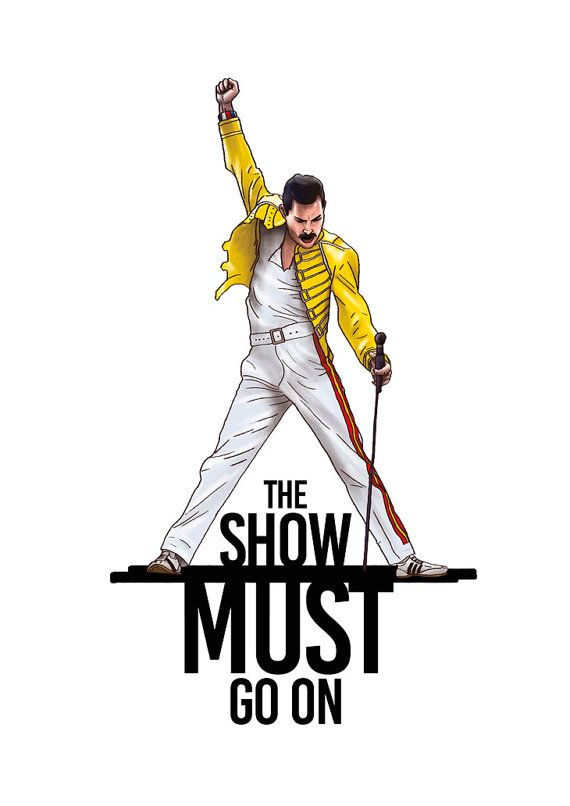

# programacion
mel
Melany Yamileth Guerra Ovando 6t Perito en Administración
musica
QUEE
temas
‘The Show Must Go On’
El tema de esta mítica canción, podría traducirse como "Quiero liberarme". Obra de QUEEN, una de las bandas de rock más famosas de todos los tiempos; y, asimismo, interpretada por una de las voces más geniales que jamás haya dado la música: Freddy Mercury.
Ciertamente, el videoclip es variopinto en su contenido: la recreación de una escena de Coronation Street, a la cual le sigue una instantánea del Royal Ballet de Londres. Y, en medio del escenario, el propio artista, quien, en primer lugar, interpreta a la mítica “señora de la limpieza”; y, en segundo término, muestra la imagen a la cual el cantante nos tenía acostumbrados en sus actuaciones. Parece una reivindicación a la libertad, una parodia frente al conservadurismo imperante. En tales condiciones, cabría entender el título del tema.
Alegato de la diversidad y ruptura con todo lo establecido previamente. Este tema que, se ilustró en vídeo con una parodia de la acomodada sociedad británica, provocó unas cuantas polémicas donde Mercury, Brian May, John Deacon y Roger Taylor se lo pasaron de lo lindo.

‘I Want to Break Free’
Una premonición cuando Mercury sabía que el final se acercaba. Toda la potencia vocal de Mercury puesta al servicio del espectáculo a pesar de saber que los días estaban contados en este single lanzado en Innuendo en 1991, 7 meses antes de la muerte de Mercury.
«The Show Must Go On» (en español "El espectáculo debe continuar") es una canción realizada por la banda de Rock británica Queen dentro de su álbum Innuendo lanzado en 1991. Aunque está firmada por el grupo, fue escrita por Brian May para Freddie Mercury quien se encontraba en sus últimos meses debido a que padecía la enfermedad del VIH.
En la canción se habla sobre un inminente final pero que, como dice el título, el espectáculo debe continuar, preparando a los fanes para lo que estaba por venir. La canción creó especulaciones entre la prensa sobre si verdaderamente Freddie tenía VIH, sospecha que se tenía desde finales de los 80. La canción es considerada por muchos como una de las más emotivas y poderosas de Queen.

Nos cuesta mucho intentar evitar poner imágenes de aquel par de días mágicos de agosto en Wembley en 1986, pero es que es inevitable. El torrente Mercury en todo su esplendor, junto a otro genio de la música, David Bowie, levantando a 70.000 personas literalmente al cielo.
La canción fue desarrollada durante una sesión de improvisación que surgió del encuentro entre David Bowie y la banda Queen en el estudio de Montreux, en Suiza, cuando Bowie iba a hacer coros en la canción de Queen "Cool Cat". Como los coros no funcionaron, la banda y Bowie, luego de un descanso, empezaron a improvisar sobre la base musical que Roger Taylor creó para la canción "Feel Like", está canción no había sido terminada.
En cuanto a la letra, Bowie aportó la lírica de una canción que había compuesto bajo el nombre de "People On Streets", el y Freddy improvisaron una melodia para mezclar la letra con la base musical de Taylor.
La canción fue producto de una lluvia de ideas de los integrantes de Queen y de Bowie. Por eso y otras razones los derechos de la canción acreditan a los cinco músicos.

Una búsqueda permanente de los buenos tiempos llevaron a Queen y Mercury a ser imparables con letras cargadas de optimismo, siempre bien secundado por sus compañeros de banda.
«Don't Stop Me Now» (en español «no me detengas ahora») es una canción de la banda de rock británica Queen, lanzada como sencillo del álbum Jazz en 1978. Es la canción número doce del álbum.
La canción se basa en el piano tocado por Freddie Mercury, mientras entraban a hacer acompañamiento Roger Taylor y John Deacon con la batería y el bajo respectivamente. En la versión de estudio, Brian May solo interviene con la guitarra durante el solo, mientras que en la versión en vivo que apareció durante el Jazz Tour y el Crazy Tour, Brian May tocaba acordes para darle un sonido más inclinado hacia el rock.
Si bien la canción alcanzó el puesto n.º 9 en las listas británicas, superando a "Bicycle Race"/"Fat Bottomed Girls", solo alcanzó el puesto n.º 86 en Estados Unidos.
En el 2005 fue elegida por los espectadores del programa de televisión de la BBC Top Gear como "la mejor canción para conducir de la historia"